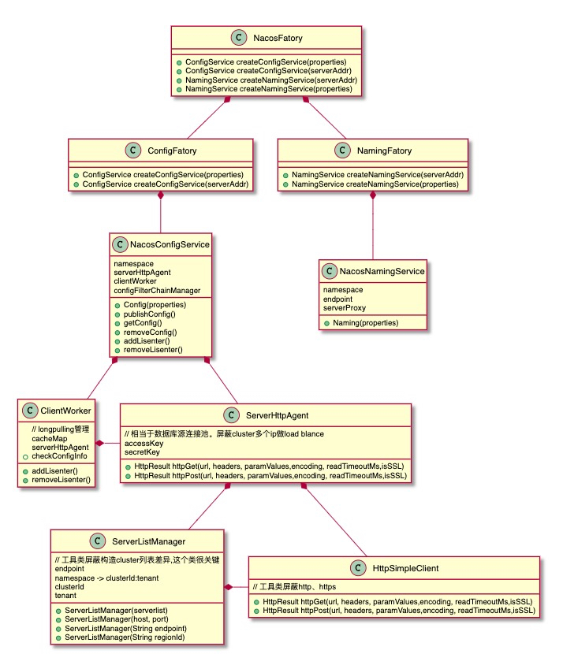
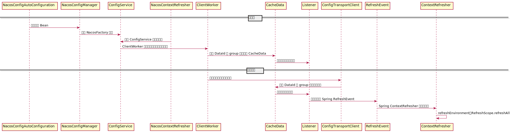

Nacos 入门
Nacos 简介
Nacos 可以帮助我们发现、配置和管理微服务。Nacos 提供了一组简单易用的特性集，帮助我们快速实现动态服务发现、服务配置、服务元数据及流量管理。
Nacos 的关键特性包括:
-
服务发现和服务健康监测
Nacos 支持基于 DNS 和基于 RPC 的服务发现。服务提供者使用 原生SDK、OpenAPI 或一个独立的 Agent 注册 Service 后，服务消费者可以使用 DNS 或 HTTP&API 查找和发现服务。
Nacos 提供对服务的实时的健康检查，阻止向不健康的主机或服务实例发送请求。Nacos 支持传输层 (PING 或 TCP) 和应用层 (如 HTTP、MySQL、用户自定义）的健康检查。 对于复杂的云环境和网络拓扑环境中（如 VPC、边缘网络等）服务的健康检查，Nacos 提供了 agent 上报模式和服务端主动检测 2 种健康检查模式。Nacos 还提供了统一的健康检查仪表盘，帮助您根据健康状态管理服务的可用性及流量。
基于 DNS 的服务发现和查找在 V2.0.0 中使用 CoreDNS，但是暂未成熟、稳定；
独立的 Agent 是以 Sidecar 边车模式通过 spring-cloud-starter-alibaba-sidecar 来提供的。
-
动态配置服务
动态配置服务可以让您以中心化、外部化和动态化的方式管理所有环境的应用配置和服务配置。
动态配置消除了配置变更时重新部署应用和服务的需要，让配置管理变得更加高效和敏捷。
配置中心化管理让实现无状态服务变得更简单，让服务按需弹性扩展变得更容易。
Nacos 提供了一个简洁易用的UI 帮助您管理所有的服务和应用的配置。Nacos 还提供包括配置版本跟踪、金丝雀发布、一键回滚配置以及客户端配置更新状态跟踪在内的一系列开箱即用的配置管理特性，帮助您更安全地在生产环境中管理配置变更和降低配置变更带来的风险。
-
服务及其元数据管理
Nacos 能让您从微服务平台建设的视角管理数据中心的所有服务及元数据，包括管理服务的描述、生命周期、服务的静态依赖分析、服务的健康状态、服务的流量管理、路由及安全策略、服务的 SLA 以及最首要的 metrics 统计数据。
Nacos 术语
Nacos 引入了一些基本的概念，系统性的了解一下这些概念可以帮助您更好的理解和正确的使用 Nacos 产品。
命名空间 - Namespace
用于进行租户粒度的配置隔离。不同的命名空间下，可以存在相同的 Group 或 Data ID 的配置。Namespace 的常用场景之一是不同环境的配置的区分隔离，例如开发测试环境和生产环境的资源（如配置、服务）隔离等。
bootstrap 中的 namespace 属性为命名空间的 ID，而非名称，默认 public 的 namespace 属性为空。
配置集 - Data
一组相关或者不相关的配置项的集合称为配置集。在系统中，一个配置文件通常就是一个配置集，包含了系统各个方面的配置。例如，一个配置集可能包含了数据源、线程池、日志级别等配置项。
配置集 ID - Data ID
Nacos 中的某个配置集的 ID。配置集 ID 是组织划分配置的维度之一。Data ID 通常用于组织划分系统的配置集。一个系统或者应用可以包含多个配置集，每个配置集都可以被一个有意义的名称标识。Data ID 通常采用类 Java 包（如 com.taobao.tc.refund.log.level）的命名规则保证全局唯一性。此命名规则非强制。
配置分组 - Group
Nacos 中的一组配置集，是组织配置的维度之一。通过一个有意义的字符串（如 Buy 或 Trade ）对配置集进行分组，从而区分 Data ID 相同的配置集。当您在 Nacos 上创建一个配置时，如果未填写配置分组的名称，则配置分组的名称默认采用 DEFAULT_GROUP 。配置分组的常见场景：不同的应用或组件使用了相同的配置类型，如 database_url 配置和 MQ_topic 配置。
它们的关系如下图所示：

Nacos 架构

Provider 和 Consumer 通过客户端 Client 或者边车 Sidecar 使用 HTTP/RPC/DNS 等方式与 Server 进行交互，Server 包含可选的配置服务（Config Service）和命名服务（Naming Service），Nacos 本身支持多数据中心，天然分布式，使用一致性协议 Raft 来保证一致性，同时提供了 Console 和 UI 进行监控和管理交互。
客户端类试图

Factory 工厂用来创建相应的配置服务或命名服务。
配置服务类使用 ClientWorker 与服务端进行沟通，在传输层使用 RPC 代理进行通讯，Java 客户端使用的是 gRPC 实现。
命名服务类同样适用 RPC 与服务端进行沟通，命名服务不需要时常监听变更，所以少了 Worker 作业类的监听、同步和缓存等。
Spring-Cloud 集成
Nacos 提供了开箱即用的 spring boot autoconfig starter 帮助我们快速集成动态配置或服务发现及健康检查功能。
动态配置
Spring Cloud Nacos Config 是通过 Spring Cloud Context 的引导上下文 (Bootstrap Context) 来集成动态配置功能。
引导上下文从外部配置源加载配置属性并解密本地依赖的外部配置文件中的属性，它是整个应用程序的父上下文，在启动和 Environment 后处理期间可用，直到准备好应用上下文 (Application Context)。
这两个上下文共享环境 Environment ，它是任何 Spring 应用程序的外部属性的来源。默认情况下，引导加载到的外部属性有更高的优先级，它们不能被本地配置覆盖。
可以参考官方 DEMO 及文档 快速了解集成及使用
应用上下文层级
如果我们是从 SpringApplication 或 SpringApplicationBuilder 来启动构建应用程序上下文，则 Bootstrap 上下文会作为父级添加到该上下文中。Spring 的一个特性是子上下文从其父上下文继承属性源和配置文件，因此与在没有 Spring Cloud Config 的情况下构建相同的上下文相比，“main”应用程序上下文包含额外的属性源。这些额外的属性包含：
-
“引导 - bootstrap”：如果在 Bootstrap 上下文中找到任何
PropertySourceLocator并且它们具有非空属性，则以高优先级显示可选的CompositePropertySource，CompositePropertySource以链表形式组合多个属性源，头部的元素会优先被使用。Nacos 正是实现了
PropertySourceLocator并从 Server 加载并构建组合的多个属性源CompositePropertySource，Nacos 会按如下顺序及规则加载属性源：- 加载共享配置：通过
spring.cloud.nacos.config.shared-configs[0]=xxx配置项加载多个共享配置 - 加载扩展配置：通过
spring.cloud.nacos.config.extension-configs[0]=xxx配置项加载多个扩展配置 - 加载应用程序配置
在 Nacos 中，应用程序配置的 Data ID 的完整格式如下：
${prefix}-${spring.profile.active}.${file-extension}- prefix 默认为
spring.application.name的值，也可以通过配置项spring.cloud.nacos.config.prefix来配置。 spring.profile.active即为当前激活的一个或多个环境 profile。file-exetension为配置内容的数据格式，可以通过配置项spring.cloud.nacos.config.file-extension来配置。spring 配置使用 properties 或 yml 类型。
Nacos 按如下顺序加载应用程序配置：
- 只加载以
${prefix}为 Data ID 的配置文件，file-extension配置项还是要和服务端的配置格式一致 - 包含后缀的
${prefix}.${file-extension} - 当前激活环境的多个 profile 的完整格式 Data ID
后加载的配置会被置于链表的头部，所以配置的优先顺序和加载顺序相反
- 加载共享配置：通过
-
”应用程序配置：[classpath:bootstrap.yml]”（以及相关文件，如果 Spring 配置文件处于激活状态）：如果有
bootstrap.yml（或.properties），则这些属性用于配置 Bootstrap 上下文。然后在设置其父级时将它们添加到子级上下文中。它们的优先级低于application.yml（或.properties）以及作为创建 Spring Boot 应用程序过程的正常部分添加到子级的任何其他属性源。
覆盖远程属性值
通过引导上下文添加到应用程序的属性源通常是“远程的”（例如，来自 Nacos Config Server）。默认情况下，它们不能在本地被覆盖。如果你想让应用程序使用自己的系统属性或配置文件覆盖远程属性，远程属性源必须通过设置 spring.cloud.config.allowOverride=true 来授予它权限（在本地设置它不起作用）。一旦设置了该标志，两个更细粒度的设置将控制远程属性相对于系统属性和应用程序本地配置是否可被覆盖：
spring.cloud.config.overrideNone=true: 任何本地属性源可以覆盖远程设置。spring.cloud.config.overrideSystemProperties=false: 只有系统属性、命令行参数和环境变量（而不是本地配置文件）可以覆盖远程设置。
如果要完全禁用远程配置服务而使用本地配置，可以通过
spring.cloud.nacos.config.enabled=false来设置。
Environment 变更

Nacos 通过 ClientWorker 的 Schedule 执行器线程轮询 Server 来监测配置变更，并将变更通知到 ConfiService 中添加的监听器；Nacos Config Starter 的 NacosContextRefresher 该类默认为所有获取数据成功的 Nacos 的配置项添加监听器，在监听到服务端配置发生变化时会发送 RefreshEvent 事件给 Spring 并实时触发 ContextRefresher 的 refresh 方法 。
Spring 的 refresh 方法主要做两件事：
- 刷新环境
Environment，将环境中属性源PropertySource相对应的属性 bean 从旧的换成新的，并发布EnvironmentChangeEvent事件告知变更的属性源的键列表。 - 触发
RefreshScope的refreshAll操作，针对 RefreshScope 来说就是清空了他所代理管理的缓存 bean，待再次调用时重新创建，创建过程就会注入新的属性源。
EnvironmentChangeEvent
应用程序可以监听 EnvironmentChangeEvent 并以几种标准方式对更改做出反应（例如用户可以以普通方式注册 ApplicationListener 为 @Beans 来实现监听）。当观察到 EnvironmentChangeEvent 时，该事件具有已更改的键列表，应用程序可以使用这些：
- 在上下文中重新绑定任何
@ConfigurationPropertiesbean 的值 - 为
logging.level.*中的任何属性设置日志级别
EnvironmentChangeEvent 涵盖了一部分刷新用例，只要您可以实际对 Environment 进行更改并发布事件即可。请注意，这些 API 是公共的，并且是核心 Spring 的一部分）。您可以通过访问 /configprops Endpoint（一个普通的 Spring Boot Actuator 功能）来验证更改是否绑定到 @ConfigurationProperties bean。例如，DataSource 可以在运行时更改其 maxPoolSize（Spring Boot 创建的默认 DataSource 是 @ConfigurationProperties bean）并动态增加容量。
Nacos 也同样支持 Actuator 的 Endpoint 并提供了专门的
/nacosconfigEndpoint 来暴露配置信息。
重新绑定 @ConfigurationProperties 不涵盖另一部分用例，在这些用例中，您需要对刷新进行更多控制，并且需要对整个 ApplicationContext 进行原子更改。为了解决这些问题，我们可以使用 @RefreshScope。
Refresh Scope
当配置发生更改时，标记为 @RefreshScope 的 Spring @Bean 会被特殊处理。此功能解决了仅在初始化时才注入配置的有状态 bean 的问题。例如，如果在通过 Environment 更改数据库 URL 时 DataSource 具有打开的连接，您可能希望这些连接的持有者能够完成他们正在做的事情。然后，下一次从池中获取连接时，它会获得一个使用新 URL 的连接 。
有时，甚至可能强制在某些只能初始化一次的 bean 上应用 @RefreshScope 注释。如果 bean 是“不可变的”，则必须使用 @RefreshScope 注解 bean 或在属性键 spring.cloud.refresh.extra-refreshable 下指定类名。
刷新作用域的 bean 是在使用时（即调用方法时）初始化的惰性代理，作用域充当初始化值的缓存。要强制 bean 在下一个方法调用时重新初始化，您必须使其缓存条目无效。
RefreshScope 是上下文中的一个 bean，并且有一个公共的 refreshAll() 方法通过清除目标缓存来刷新范围内的所有 bean。/refresh 端点公开了这个功能（通过 HTTP 或 JMX）。要按名称刷新单个 bean，还有一个 refresh(String) 方法。
配置管理
Nacos 不但提供了 Actuator Endpoint 的 Rest 接口来暴露和管理配置项，还提供了可视化的 Web UI 来进行编辑、存储、分发、变更管理、历史版本管理、变更审计等。
服务发现与健康检查
可以参考官方 DEMO 及文档快速了解集成及使用
服务发现
@EnableDiscoveryClient 注解
Spring Cloud Commons 提供了 @EnableDiscoveryClient 注解。这会寻找带有 META-INF/spring.factories 的 DiscoveryClient 和 ReactiveDiscoveryClient 接口的实现。服务发现的客户端实现在 spring.factories 的键 org.springframework.cloud.client.discovery.EnableDiscoveryClient 下中添加一个自己的配置类。DiscoveryClient 实现的示例包括 Spring Cloud Netflix Eureka, Spring Cloud Consul Discovery 和 Spring Cloud Zookeeper Discovery。
Nacos 并没有使用该种 SPI 的形式直接提供服务发现客户端实现，而是使用在
spring.factories下提供 Spring Boot 的自动配置实现来自动注入DiscoveryClient的实现NacosDiscoveryClient。
Spring Cloud 默认提供阻塞和响应式服务发现客户端。您可以通过设置 spring.cloud.discovery.blocking.enabled=false 或 spring.cloud.discovery.reactive.enabled=false 轻松禁用阻塞和/或响应式客户端。要完全禁用服务发现，您只需设置 spring.cloud.discovery.enabled=false。
Nacos 同样支持这两种类型的客户端配置，也可以直接使用 Nacos 的
spring.cloud.nacos.discovery.enabled=false来禁用服务发现。
默认情况下，DiscoveryClient 的实现会自动将本地 Spring Boot 服务器注册到远程发现服务器。可以通过在 @EnableDiscoveryClient 中设置 autoRegister=false 来禁用此行为。
@EnableDiscoveryClient不再需要。如果类路径上发现DiscoveryClient的实现，Spring Boot 应用程序就会自动向服务发现服务器注册。
负载均衡
NacosServerList 实现了 com.netflix.loadbalancer.ServerList 接口，并在 @ConditionOnMissingBean 的条件下进行自动注入，
Nacos Discovery Starter 默认集成了 Ribbon ，所以对于使用了 Ribbon 做负载均衡的组件，可以直接使用 Nacos 的服务发现。
除了 Ribbon，Spring Cloud 也提供了自己的 Load-balancer 实现，我们可以轻松的将 RestTemplate、FeignClient、WebClient 配置为自动使用负载均衡器的客户端。
服务注册
Spring Cloud Nacos Discovery 遵循了 Spring Cloud Common 标准，实现了 AutoServiceRegistration、ServiceRegistry、Registration 这三个接口。
Commons 提供了一个 ServiceRegistry 接口，该接口提供了 register(Registration) 和 deregister(Registration) 等方法，可以让你提供自定义的注册服务。Registration 是一个标记接口。
Nacos 同样也使用该接口来注册服务，通过 Spring Boot 自动配置类提供
ServiceRegistry的实现NacosServiceRegistry。
每个 ServiceRegistry 实现都有自己的 Registry 实现。
ZookeeperRegistration与ZookeeperServiceRegistry一起使用EurekaRegistration与EurekaServiceRegistry一起使用ConsulRegistration与ConsulServiceRegistry一起使用NacosRegistration与NacosServiceRegistry一起使用
在 Spring Cloud 应用的启动阶段，监听了 WebServerInitializedEvent 事件，当 Web 容器初始化完成后，即收到 WebServerInitializedEvent 事件后，会触发注册的动作，调用 ServiceRegistry 的 register 方法，将服务注册到 Nacos Server。
如果需要有更加自定义的获取服务信息或管理服务，可以使用
@Autowired注入一个NacosRegistration实例，通过其NacosDiscoveryProperties持有的NamingService字段内容直接调用 Nacos API。
服务注册 Actuator Endpoint
Spring Cloud Commons 提供了一个 /service-registry 执行期端点。这个端点依赖于 Spring Application Context 中的 Registration bean。使用 GET 调用 /service-registry 会返回 Registration 服务实例的注册状态。使用带有 JSON 正文的同一端点的 POST 会将当前注册的状态更改为新值。 JSON 正文必须包含具有合法值的 status 字段。请参阅您在更新状态时使用的 ServiceRegistry 实现的文档以及为状态返回的值。例如，Eureka 支持的状态是 UP、DOWN、OUT_OF_SERVICE 和 UNKNOWN。
Nacos 也同样支持 Actuator 的 Endpoint 并提供了专门的
/nacos_discoveryEndpoint 来获取本机已订阅的服务信息及配置信息。